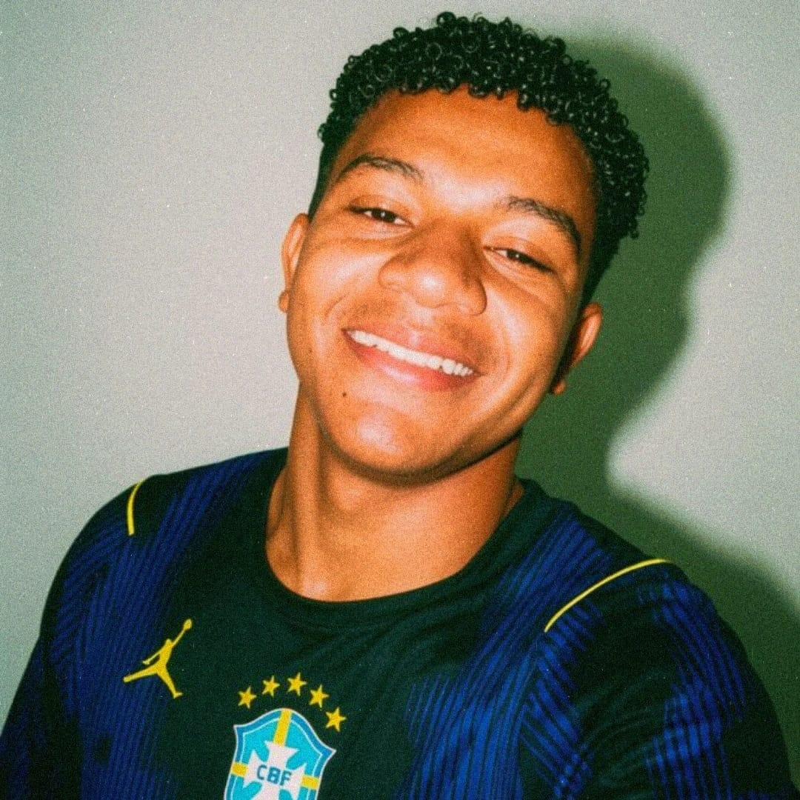

Douglas Silvino
Estudante do IFTO - Campus Formoso do Araguaia

Estudante do IFTO - Campus Formoso do Araguaia
Olá, eu sou Douglas Silvino, conhecido nas redes sociais como @silvininhoficiall. Tenho 17 anos e atualmente sou aluno do IFTO – Campus Formoso do Araguaia. Sou apaixonado por tecnologia, programação e educação. Também gosto muito de criar conteúdos, gravar vídeos e editar, que é uma das minhas maiores especialidades.
Uma das minhas maiores conquistas foi ingressar no IFTO.
Outras conquistas importantes da minha trajetória:
● 🥈 Medalha de Prata na ONC (Olimpíada Nacional de Ciências) – 2025;Não sou definido pela minha idade, mas pela minha capacidade de transformar sonhos em resultados.
Atualmente, meu principal objetivo é concluir minha formação no IFTO, ingressar em uma licenciatura em Matemática 🎓 e construir uma trajetória que deixe um grande legado na educação.
Atuo como criador de conteúdo digital, produzindo vídeos de humor, entretenimento e conteúdos criativos para diferentes plataformas. Utilizo as redes sociais como um espaço para compartilhar ideias, divertir as pessoas e criar conexões por meio da criatividade. Somando todas as minhas redes sociais, já alcancei mais de 15 mil seguidores e ultrapassei a marca de 7 milhões de visualizações.